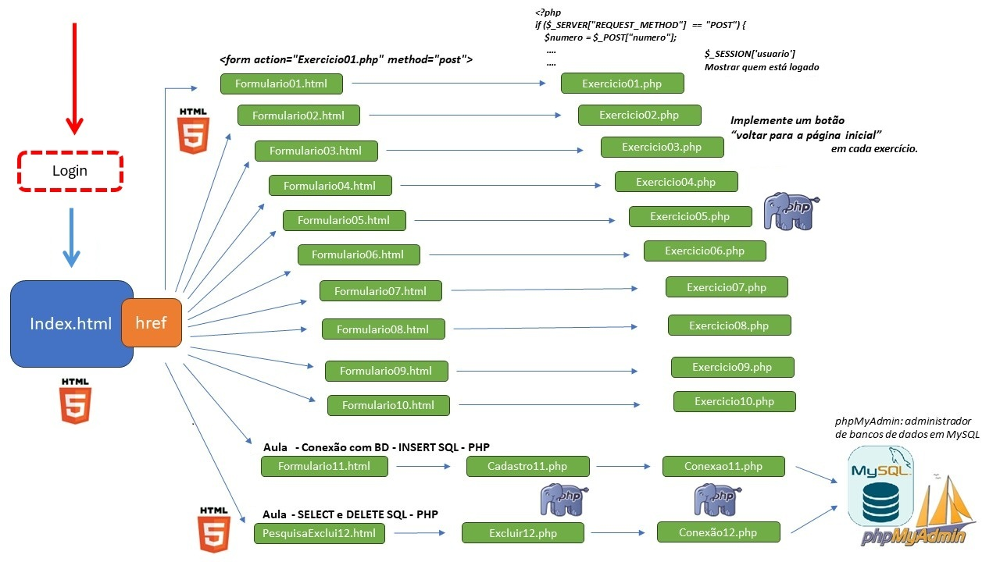

Lista de Exercícios PHP
Exercício 1 - Verificação de Número Positivo, Negativo ou Zero
Exercício 2 - Tabuada de um Número
Exercício 3 - Cálculo do Fatorial com Recursão
Exercício 4 - Calculadora com SwitchCase
Exercício 5 - Verificação de Número Par ou Ímpar
Exercício 6 - Impressão de Valores em Ordem Crescente
Exercício 7 - Comparação de Valores A e B
Exercício 8 - Cálculo da Média Final de um Aluno
Exercício 9 - Verificação de Maioridade
Exercício 10 - Identificação do Mês pelo Número
Exercício 11 - Cadastro de Alunos e Carga Horária para Atividades Complementares
Exercício 12 - Realizando Buscas e Exclusão de Registros no Banco de Dados com PHP
